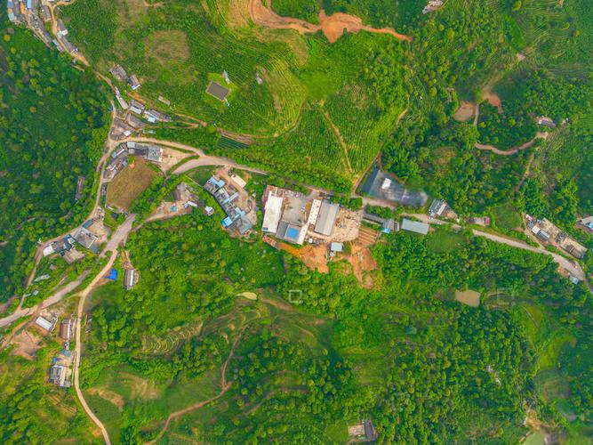
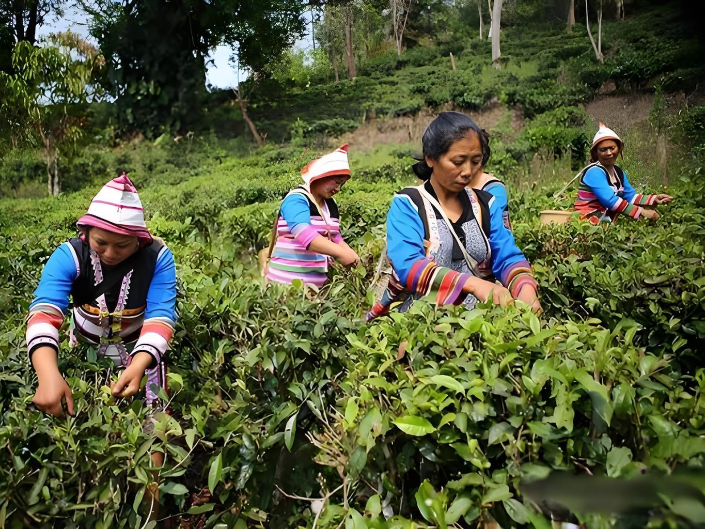
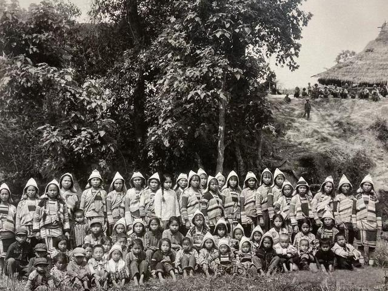
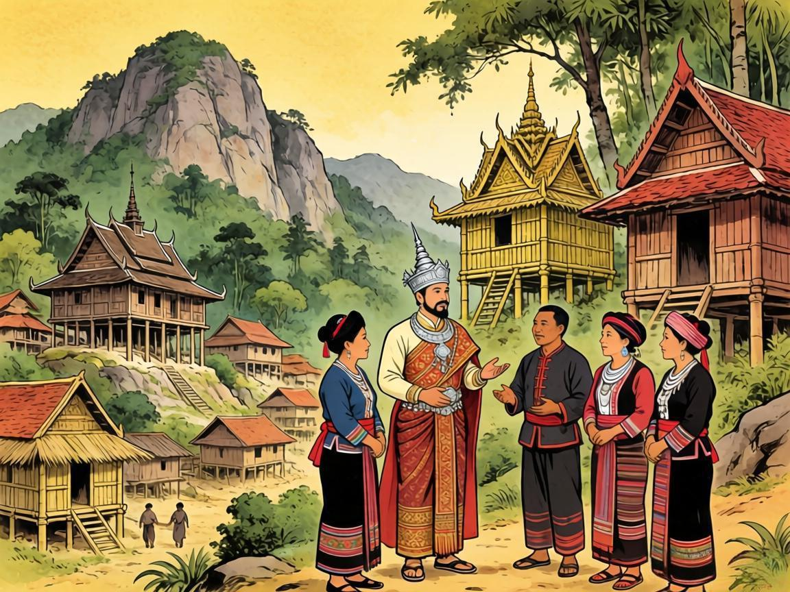

基诺族概述
基诺族是中国56个民族大家庭中最后一个被官方确认的民族，主要聚居于云南省西双版纳傣族自治州景洪市基诺山基诺族乡。"基诺"二字意为"尊敬舅舅的民族"，古汉语译名"攸乐"则寓含安逸静谧之意。由于基诺族没有本民族文字，其历史长期以口耳相传、竹木刻画的方式延续，使这个民族的文化血脉中天然带有神秘而悠远的气息。
从远古先民在"司杰卓米"的莽林中繁衍生息，到历经母系氏族、父系家庭公社的社会演进；从刀耕火种的山地农耕与享誉天下的攸乐茶山，到封建土司的漫长管辖与近代的奋起抗争——基诺族走过了一段跨越千年、充满生命力的历史旅程。1979年，基诺族正式成为中国第56个民族，从此以崭新的姿态迈入现代社会，而那深藏于大鼓之声、织布之纹与山林之间的古老文明，至今仍在基诺山上生生不息。
基诺历史概述
族源传说——创世女神与民族起源
在基诺族的口述传说中，创世女神"阿嫫腰白"是万物的缔造者。相传她将一对兄妹"玛黑"与"玛妞"置入木鼓之中，以大洪水涤荡旧世界，兄妹破鼓而出后繁衍了人类。基诺族的起源传说中，女神阿嫫腰北将一对兄妹放入木鼓中渡过洪水，待洪水退去后兄妹破鼓而出，肩负起繁衍人类的重任。这一神话深刻体现了基诺人对生命起源的朴素理解与对自然力量的崇敬。
1

迁徙与聚落——从"杰卓"到基诺山
据传说，基诺族先民由普洱、墨江甚至更远的北方迁至"司杰卓米"，后因人口增多、生计困难，大部分人迁至基诺山的杰卓山定居，并逐渐分化为乌优、阿哈、阿希三大支系。这次迁徙也伴随着两项重大变革：废除了血缘内婚制，形成了"基诺洛克"的部落组织名称，标志着民族共同体意识的形成。
3

刀耕火种——山地农业与茶叶文明
基诺族类似于"畲"的刀耕火种农业起源较早，农业生产包括备耕、号地、砍地、烧地、播种等多种方式。山林是基诺族的生存之源、衣食之本。早在18世纪以前，基诺山已开辟出大片茶园，攸乐山被列为"六大茶山"之首，每年产茶数千驮，通过普洱转销国内外，享有盛誉，为中国经济做出了重要贡献。
5

近代动荡——民国时期的抗争与变革
民国时期，基诺山区推行保甲制，多以傣人为头目，由此引发了以基诺人为首的多民族暴动，事后以车里县县长撤职查办并免除三年税赋收场。这段历史折射出基诺族人在压迫之下不屈抗争的精神，也推动了民族权利意识的觉醒。
7
发祥之地——司杰卓米与先民定居
基诺族的发祥地被认为是"司杰卓米"，即基诺山东部边缘一座海拔近1440米的高山，现称为孔明山。阿哈、阿希两支系以及乌优支系的居民，回溯祖先迁徙路线时都不约而同地将发祥地指向这座高山。先民们在此群居繁衍，孕育出这个民族最初的共同体与文化认同。
2
母系社会——氏族聚落与父母寨制度
基诺族定居基诺山之初，可能还处于母系社会阶段。传说最早居住在"杰卓"的是一位寡妇，生了七男七女，兄妹结婚繁衍后形成了两对可以通婚的氏族集团，即"父寨"与"母寨"，此后不断衍生出各个"儿女寨"，形成了独特的亲属寨制度。至少在三百年前，基诺族已从母系时代过渡到父系时代。
4

封建管辖——从土司统治到清朝设治
基诺族最早的隶属关系可追溯至1160年，彼时基诺山即为傣族叭真王族的世袭领地。清雍正七年（1729年），清政府在攸乐山筑砖城、派驻军队，设攸乐同知，但因"烟瘴甚盛"、兵丁死伤惨重，六年后撤销同知，改委任基诺族首领为"攸乐土目"，此后长期处于傣族封建领主管辖之下。
6

新时代新跨越——1979年民族确认与现代发展
1979年6月，基诺族被中华人民共和国政府正式确认为中国第56个民族，结束了长期以来身份归属不明的历史。自此，基诺族直接从原始农村公社制度进入社会主义发展阶段，从茅草顶竹篱笆的传统民居到现代建筑，从神圣大鼓到国家级非遗的大鼓舞，基诺人在积极融入现代社会的同时，也在努力传承和守护这个民族古老的文化宝藏。